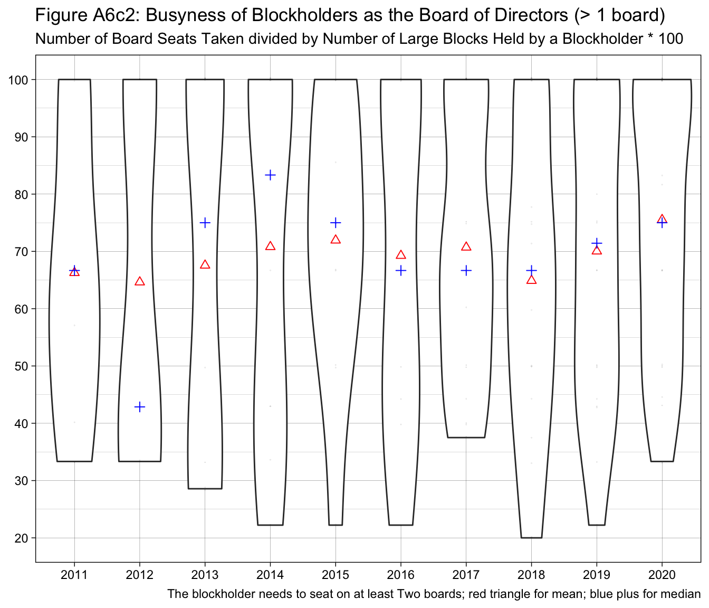

Show the code
InvestorType <- as_tibble(read_dta(file = "~/Library/CloudStorage/OneDrive-HandelshögskolaniStockholm/MAR_2024/R/Data/InvestorType_liquidity.dta")) Data Preview
We first load the InvestorType_liquidity.dta dataset merged by Mengyu (mengyu.yang@hhs.se).
InvestorType <- as_tibble(read_dta(file = "~/Library/CloudStorage/OneDrive-HandelshögskolaniStockholm/MAR_2024/R/Data/InvestorType_liquidity.dta")) and here is a list of variables in the dataset:
InvestorType %>% names() %>% sort() %>%
data.frame(var = ., var_first = substr(., 0,1)) %>%
as_tibble() %>%
group_by(var_first) %>%
summarise(vars = paste(var, collapse = ", ")) %>%
select(Variables = vars) %>%
gt() %>%
tab_header(
title = md("All Variable Names in the Dataset `InvestorType_liquidity.dta`") # ,
# subtitle = md("File: 10-X_2019.zip \u2192 Variable: `sec_csvinfo`")
) %>%
tab_options(table.font.size = 10, heading.align = 'left' ) %>%
tab_style( # update the font size for table cells.
style = cell_text(size = px(10)),
locations = cells_body()
)All Variable Names in the Dataset InvestorType_liquidity.dta |
|---|
| Variables |
| Active, Active_Passive, Activeper_, Activistfund |
| BoardMember, BoardMember_parent, BoardMember_subsidary, Boardsize |
| Capital, CEO, CEO_parent, CEO_subsidary, Company, Company_PDMR |
| Duration, Duration5 |
| ElecCommitPerson, Engagement |
| FamTrustper_, FullOrgName |
| Holder, Holder_id, Horizonper_, HorizonperT_ |
| I_busyowner, I_multi_block, IDmaster, Insider, InsiderOwner, InsiderPerson, InsiderPersonsEngagement, InsiderPosition, Institutions, InvestorID |
| Largest, Longterm |
| Mutualper_ |
| Name, NCperson, NCsize, NumberofShares |
| OnBoard, OnNC, OrganizationId, OrgNumber, OwnerType, OwnerType1, OwnerType10, OwnerType11, OwnerType2, OwnerType3, OwnerType4, OwnerType5, OwnerType6, OwnerType7, OwnerType8, OwnerType9 |
| Portfolio_Tuenover_Category |
| REITper_, Representing |
| Sphere, SphereID, Spheretag |
| TicEndDate, TicFromDate, Ticker1, Ticsuffix, Turnover, Type, Type_final, Type_new |
| Unclassifiedper_, UTicker1 |
| ValueMSEK, VCPEper_, Votes |
| Y, Year |
| askad |
| bankper_, bidad, bidun, bookvalue, bookvaluecurrency, br01a_foubautg, br09_tillgsu, br10_eksu, br10a_aktiekap, br10h_resarb, br17_eksksu |
| corpensionper_ |
| firm, foreign, foreignper_, frac_blockholding |
| govpensionper_ |
| hedgeper_, highad |
| indiv, indiv_family_owned, indivper_, insuranceper_, invper_, isin, isInsiderOwner, isInsiderperson |
| lastad, ln_marketcap, lname, long_term_cat, long_term_duration, lowad |
| major_, marketname, marketvalue, marketvaluecurrency, maxactive, maxCATE, maxforeign, maxholding, maxindiv, maxmutual, maxturnover, maxType, mutual |
| num_blockholding, ny_avkegkap, ny_avktokap, ny_kapomsh, ny_rorkapo, ny_skuldgrd, ny_solid |
| oabad, oatad, openad, ownerID |
| per2_, per2_Y, per3_, per5_, per5_Y |
| repbyNC, rr01_ntoms, rr15_resar |
| ser_ftgkategori, ser_laen, ser_namn, ser_stklf |
| top1, top2, top3, tot_Votes, totalmarketvalue, totalmarketvalueM |
and the data is from 2011 to 2020 for all Swedish public firms, blockholders in each firm are also included.
In this section, we analyze whether firms with at least one blockholder on the board change over time. First, we construct a new panel dataset InvestorType_OnboardYear to record
n_total: the total number of firms;n_firm: the total number of firms with blockholder(s) on the board;percent_Blockholder_OnBoard: the percentage of firms in all firms having at least one blockholder on the board.The raw data look like this:
InvestorType_Onboard <-
InvestorType %>%
select(Year, Ticker1, lname, OnBoard, top3)
InvestorType_OnboardYear <-
InvestorType_Onboard %>%
## group into firm-year observations:
group_by(Year, Ticker1) %>%
summarise(
Blockholder_OnBoard = (any(OnBoard == 1))
# top3_OnBoard = sum(top3 * OnBoard, na.rm = TRUE), # number of top 3 blockholders on the board \in {0,1,2,3}
) %>%
ungroup() %>%
## add information about IPO/Delisting. (this info is also used in section s3.1).
left_join(
y = InvestorType %>%
distinct(Year, Ticker1) %>%
group_by(Ticker1) %>%
mutate(
IPO_year = min(Year, na.rm = TRUE), # the first year that the firm appears in the dataset
Delist_year = max(Year, na.rm = TRUE) # the last year that the firm appears in the dataset
) %>%
mutate(
IPO = (IPO_year == Year), # indicator for whether it is the IPO year for the firm
Delist = (Delist_year == Year) # indicator for whether it is the Delist year for the firm
) %>%
ungroup() %>%
select(-IPO_year, -Delist_year),
by = c("Year", "Ticker1")
) %>%
## group into yearly summary statistics:
group_by(Year) %>%
summarise(
n_firm = sum(Blockholder_OnBoard, na.rm = TRUE),
## summary stat for top 3 blockholders:
# n_top3_OnBoard = sum(top3_OnBoard, na.rm = TRUE), # total number of board seats taken by a top3 investor.
# n_firm_1top3 = sum(top3_OnBoard == 1), # number of firms with only one top3 blockholder.
# n_firm_2top3 = sum(top3_OnBoard == 2), # number of firms with only two top3 blockholder.
# n_firm_3top3 = sum(top3_OnBoard == 3), # number of firms with only three top3 blockholder.
n_total = n(), # total number of firms in each year
n_IPO = sum(IPO, na.rm = TRUE), # total number of IPO firms in each year
n_Delist = sum(Delist, na.rm = TRUE) # total number of Delisting firms in the next year
) %>%
ungroup() %>%
mutate(
percent_Blockholder_OnBoard = n_firm / n_total * 100,
exit_rate = n_Delist / n_total * 100 # percentage of delisting firm
# avenumber_top3_OnBoard = n_top3_OnBoard / n_firm # average number of top 3 investors on the board
) %>%
mutate(
Year = as.integer(Year),
exit_rate = lag(exit_rate, 1), # rate of exit in year t from the sample in year t-1.
n_IPO = c(NA, n_IPO[-1]),
n_Delist = -lag(n_Delist, 1) # convert to the number of public firms delisted in each year
)
InvestorType_OnboardYear# A tibble: 10 × 7
Year n_firm n_total n_IPO n_Delist percent_Blockholder_OnBoard exit_rate
<int> <int> <int> <int> <int> <dbl> <dbl>
1 2011 69 159 NA NA 43.4 NA
2 2012 58 161 2 0 36.0 0
3 2013 63 170 9 0 37.1 0
4 2014 68 188 19 -1 36.2 0.588
5 2015 89 211 23 0 42.2 0
6 2016 69 233 23 -1 29.6 0.474
7 2017 123 262 31 -2 46.9 0.858
8 2018 135 279 25 -8 48.4 3.05
9 2019 137 281 11 -9 48.8 3.23
10 2020 151 291 22 -12 51.9 4.27 We then generate the time series plot (Fig. @ref(fig:fig1-OnboardYear)) to show the trend of firms with blockholders on their boards over the period 2011 to 2020.
## Fig 1. ====
figure_a1 <- ggplot(InvestorType_OnboardYear, aes(x = Year)) +
geom_bar(aes(y = (percent_Blockholder_OnBoard - 20) * 8, fill = "percent_firms"),
alpha = 0.8, width = 0.8,
stat = "identity", color = "white") +
geom_line(aes(y = n_firm,
col = "Total number of firms with blockholder(s) on the board (L)"),
lty = 2, linewidth = 1) +
geom_point(aes(y = n_firm,
col = "Total number of firms with blockholder(s) on the board (L)"),
size = 3, shape = 2) + # Add points for n_firm
geom_line(aes(y = n_total, col = "Total number of firms (L)"), lty = 1, linewidth = 1) +
geom_point(aes(y = n_total, col = "Total number of firms (L)"), size = 3, shape = 1) + # Add points for n_total
## add IPO and Delisting information:
geom_line(aes(y = n_IPO, col = "Total number of IPO firms (L)"), lty = 3, linewidth = 1) +
geom_point(aes(y = n_IPO, col = "Total number of IPO firms (L)"), size = 3, shape = 3) + # Add points for n_IPO
geom_line(aes(y = n_Delist, col = "Total number of Delisting firms (L)"), lty = 3, linewidth = 1.3) +
geom_point(aes(y = n_Delist, col = "Total number of Delisting firms (L)"), size = 3, shape = 4) + # Add points for n_Delist
scale_x_continuous(n.breaks = 10, name = NULL) +
# geom_line(aes(y = (40-25) * 6)) +
scale_y_continuous(
name = "Number of Firms (Black/Red)", # Label for the primary y-axis
n.breaks = 10,
sec.axis = sec_axis(
transform = ~ (. / 8 + 20) , # Define the transformation for the secondary axis
name = "In Percentage(%) (Blue)",
breaks = seq(from = 10, to = 70, by = 5),
labels = label_percent(scale = 1) # Format labels as percentages
)
) +
labs(
title = "Figure A1: Firms with Blockholder(s) on the Board from 2011 to 2020"
# caption = "\nRedline: Total number of firms in each year in the sample. \nBlackline: Total number of firms with blockholders on board in each year in the sample. \nBluebar: Percentage of firms in each year having blockholder(s) in their board. "
) +
scale_color_manual(name = NULL, values = c(
"Total number of firms with blockholder(s) on the board (L)" = "black",
"Total number of firms (L)" = "red",
"Total number of IPO firms (L)" = "blue",
"Total number of Delisting firms (L)" = "orange"
) ) +
scale_fill_manual(name = NULL, values = c(
"percent_firms" = "skyblue"
), labels = c("Percentage of firms having blockholder(s) on the board (R)")) +
theme_bw() + # Apply the linedraw theme
theme(plot.caption = element_text(hjust = 0, margin = margin(l = 8)), # Left-align and indent the caption
legend.position = "inside",
legend.position.inside = c(0.25, 0.85),
legend.background = element_rect(fill = "transparent") # Transparent legend background
# legend.box.background = element_rect(fill = "transparent") # Transparent legend box background
)
figure_a1
ggsave(file.path("figure_a", "firms_num_blockholders.png"),
plot = figure_a1, width = 9, height = 6, dpi = 300)In Figure A1, we show two sets of trends. First, the total number of public firm in the Swedish market has been growing in the 2011-2020 period. This trend can be decomposed into the changes in the incumbents who went public before our sample period, new joiners (the blue “+” line) who did their IPOs in our sample period and leavers (the orange “\times” line) who left our sample. As shown in the graph, we have seen a large increase in the number of new IPO firms since 2012, which peaked around 2017-2018. On the other hand, delisting from the stock market is rather infrequent before 2018, which jumps around 10 firms per year after 2018. This shift significantly reduce the speed of increase in the total number of firms we observed in each year.
Second, we look into firms with at least one blockholder on their boards. A blockholder is defined as a large shareholder who holds at least 2% stakes in the company. We can see that the total number of firms with at least one blockholder on the board has seen a dramatic shift from below 80 firms per year before 2016 to over 120 firms after 2016.
In this sub-section, we look into the changes in the board size for all Swedish public companies in both the time-series and cross-sectional dimensions. More importantly, we want to see is there noticeable changes in these two dimensions from the company side. While the size of the board is a result of bargaining between shareholders in the company, the existing board (t-1) arguably has a bigger say on this matter. We further conduct a subgroup analysis based on whether the firm has blockholder(s) on its board in year t-1 (Blockholder_OnBoard_1t).
InvestorType_BoardSize <- InvestorType %>%
select(Year, Ticker1, Boardsize) %>%
distinct() %>%
## adding whether a firm's board has blockholder(s) in the current year.
left_join(
y = InvestorType_Onboard %>%
## group into firm-year observations:
group_by(Year, Ticker1) %>%
summarise(
Blockholder_OnBoard_t = (any(OnBoard == 1))
) %>%
ungroup(),
by = c("Year", "Ticker1")
) %>%
## adding whether a firm's board has blockholder(s) in the previous year.
left_join(
y = InvestorType_Onboard %>%
## group into firm-year observations:
group_by(Year, Ticker1) %>%
summarise(
Blockholder_OnBoard_1t = (any(OnBoard == 1))
) %>%
ungroup() %>%
mutate(Year = Year + 1),
by = c("Year", "Ticker1")
) %>%
## add information about IPO/Delisting. (this info is also used in section s3.1).
left_join(
y = InvestorType %>%
distinct(Year, Ticker1) %>%
group_by(Ticker1) %>%
mutate(
IPO_year = min(Year, na.rm = TRUE), # the first year that the firm appears in the dataset
Delist_year = max(Year, na.rm = TRUE) # the last year that the firm appears in the dataset
) %>%
ungroup(),
by = c("Year", "Ticker1")
) %>%
mutate(status = (Year == IPO_year) * 1 + (Year > Delist_year) * (-1) )
## boxplot
figure_a1a <- InvestorType_BoardSize %>%
# filter(Year > IPO_year & Year <= Delist_year) %>% # keep only years with business as usual
filter(status == 0) %>% # keep only non-IPO years
mutate(Year = as.factor(Year)) %>%
ggplot(data = ., aes(x = Year, y = Boardsize)) +
## box plot
geom_boxplot(notch = FALSE, outlier.shape = 4) +
## add dot plot
geom_dotplot(binaxis = "y",
binwidth = 1/50,
position = position_jitter(width = 0, height = 0.3, seed = 123),
stackdir = "center",
dotsize = 1) +
## add the mean plot
stat_summary(fun = mean, geom = "point", shape = 2, size = 2, color = "red") +
scale_x_discrete(name = NULL) +
scale_y_continuous(n.breaks = 10) +
labs(
title = "Figure A1a: Changes in the Board Size"
) +
theme_linedraw()
figure_a1a
## violin plot
figure_a1b <- InvestorType_BoardSize %>%
# filter(Year > IPO_year & Year <= Delist_year) %>% # keep only years with business as usual
filter(status == 0) %>%
mutate(Year = as.factor(Year)) %>%
ggplot(data = ., aes(x = Year, y = Boardsize)) +
geom_violin() +
## box plot
# geom_boxplot(notch = FALSE, outlier.shape = 4) +
## add dot plot
geom_dotplot(binaxis = "y",
binwidth = 1/50,
position = position_jitter(width = 0, height = 0.3, seed = 123),
stackdir = "center",
dotsize = 1) +
## add the mean plot
stat_summary(fun = mean, geom = "point", shape = 2, size = 2, color = "red") +
stat_summary(fun = median, geom = "point", shape = 3, size = 2, color = "blue") +
scale_x_discrete(name = NULL) +
scale_y_continuous(n.breaks = 10) +
labs(
title = "Figure A1b: Changes in the Board Size",
caption = "Mean: Red Triangle. & Median: Blue Plus Sign."
) +
theme_linedraw()
figure_a1b Figure A1a shows the time-series change in the distribution of the board size between 2011 and 2020, restricting to firms in non-IPO years and before their delisting year. We provide both the box plot and the dot plot in each year. In our sample period, the overall distribution of board size seems quite stable before 2015 and after 2017. However, there is a noticeable shift in the distribution shift to the right by 1 seat between 2015 and 2017, with the interquartile range (IQR) unchanged. The median number of board seats only goes up from 6 to 7 in 2015 and reverts back to 6 in 2016. While the average number of board seats (the red \triangle) remains stable over time. The violin plot in Figure A1b also support this narrative.
## subgroup: Blockholder_OnBoard_1t (ex. IPO)
figure_a1c <- InvestorType_BoardSize %>%
filter(!is.na(Blockholder_OnBoard_1t)) %>%
filter(Year > 2011) %>%
filter(Year > IPO_year & Year <= Delist_year) %>%
mutate(
Year = as.factor(Year),
Blockholder_OnBoard_1t = ifelse(Blockholder_OnBoard_1t, yes = "Yes", no = "No")
) %>%
ggplot(data = ., aes(x = Year, y = Boardsize, fill = Blockholder_OnBoard_1t)) +
## box plot
geom_boxplot(notch = FALSE, position = position_dodge(0.68)) +
scale_x_discrete(name = NULL) +
scale_y_continuous(n.breaks = 10) +
labs(
title = "Figure A1c: Board Size w/ and w/o Blockholder(s) on the Board",
fill = "Blockholder on\nthe Board at t-1", # Change legend name for color
caption = "Exclude firms in IPO years."
) +
theme_linedraw() +
theme(# legend.position = "right",
plot.subtitle = element_text(size = 9), # Adjust the size as needed
legend.position = "inside",
legend.direction = "horizontal",
# legend.box = "horizontal",
legend.position.inside = c(0.85, 0.95),
legend.background = element_rect(fill = "transparent") # Transparent legend background
) # move legends to the bottom (e.g. `scale_fill_manual`)
figure_a1c
## subgroup: Blockholder_OnBoard_1t (ex, IPO & Delist)
InvestorType_BoardSize %>%
filter(!is.na(Blockholder_OnBoard_1t)) %>%
filter(Year > 2011) %>%
filter(Year > IPO_year & Year < Delist_year) %>%
mutate(
Year = as.factor(Year),
Blockholder_OnBoard_1t = ifelse(Blockholder_OnBoard_1t, yes = "Yes", no = "No")
) %>%
ggplot(data = ., aes(x = Year, y = Boardsize, fill = Blockholder_OnBoard_1t)) +
## box plot
geom_boxplot(notch = FALSE, position = position_dodge(0.68)) +
scale_x_discrete(name = NULL) +
scale_y_continuous(n.breaks = 10) +
labs(
title = "Figure A1c1: Board Size w/ and w/o Blockholder(s) on the Board",
fill = "Blockholder on\nthe Board at t-1", # Change legend name for color
caption = "Exclude firms in IPO years and the last years in the public market."
) +
theme_linedraw() +
theme(# legend.position = "right",
plot.subtitle = element_text(size = 9), # Adjust the size as needed
legend.position = "inside",
legend.direction = "horizontal",
# legend.box = "horizontal",
legend.position.inside = c(0.85, 0.95),
legend.background = element_rect(fill = "transparent") # Transparent legend background
) # move legends to the bottom (e.g. `scale_fill_manual`)The reason is that for firms going to delist, blockholders should have very high incentive to directly acquire a seat on the board. Thus may mechanically shift the distribution to the right.
The same reason applies when excluding the IPO firms. When these firms went public, blockholders generally will be on the board.
In Figure A1c, we analyse the distribution of board sizes between the group with and without blockholders on the board in the previous year (Blockholder_OnBoard_1t). Using this indicator in year t-1 captures different board transition dynamics and avoids some confounding issues.
While firms without blockholders on their boards in t-1 have seen that the distribution shifts to the right from 2012 to 2016, the median board size drops from 7 back to 6 after 2016. On the other hand, firms with blockholder(s) on the board experiences this right-shift between 2016-2017, with the median board size up from 6 to 7 in 2017.
The same pattern stays if we also excluding observations for firms in the last year before delisting (Figure A1c1). We also use a different subgroup to see the changes in the board size in Figure A1c2 in Section 4.1. The three subgroups are “Delist”, “Public” and “IPO”. “Delist” includes firm-year observations that it is the last observation of this firm in our sample, “IPO” includes firm-year observations that it is the first observation of this firm in our sample, and all other observations are in group “Public”. For IPO firm, they tend to have 6 to 7 board seats between 2016-2018. However, the general trend there is unclear because of the lack of observations.
One important factor that directly affect the likelihood of a blockholder becoming a board of director is whether it is in the largest 3 blockholders (i.e. Top 3). In this subsection, we look into the difference in the corporate boards w/ and w/o top 3 blockholders on the board.
## Data:
InvestorType_OnboardTop3 <-
InvestorType %>%
select(Year, Ticker1, lname, OnBoard, top3) %>%
## group into firm-year observations:
group_by(Year, Ticker1) %>%
summarise(
Blockholder_OnBoard = (any(OnBoard == 1)),
top3_OnBoard = sum(top3 * OnBoard, na.rm = TRUE), # number of top 3 blockholders on the board \in {0,1,2,3}
) %>%
ungroup() %>%
## add information about IPO/Delisting. (this info is also used in section s3.1).
left_join(
y = InvestorType %>%
distinct(Year, Ticker1) %>%
group_by(Ticker1) %>%
mutate(
IPO_year = min(Year, na.rm = TRUE), # the first year that the firm appears in the dataset
Delist_year = max(Year, na.rm = TRUE) # the last year that the firm appears in the dataset
) %>%
mutate(
IPO = (IPO_year == Year), # indicator for whether it is the IPO year for the firm
Delist = (Delist_year == Year) # indicator for whether it is the Delist year for the firm
) %>%
ungroup() %>%
select(-IPO_year, -Delist_year),
by = c("Year", "Ticker1")
) %>%
## group into yearly summary statistics:
group_by(Year) %>%
summarise(
n_firm = sum(Blockholder_OnBoard, na.rm = TRUE), # number of firms with blockholder(s) on the board.
## summary stat for top 3 blockholders:
n_firm_top3 = sum(top3_OnBoard > 0, na.rm = TRUE), # number of firms with top 3 blockholder(s) on the board.
n_Boardseats_top3 = sum(top3_OnBoard, na.rm = TRUE), # total number of board seats taken by a top3 investor.
# n_firm_0top3 = sum(top3_OnBoard == 0), # number of firms with only one top3 blockholder.
n_firm_1top3 = sum(top3_OnBoard == 1), # number of firms with only one top3 blockholder.
n_firm_2top3 = sum(top3_OnBoard == 2), # number of firms with only two top3 blockholder.
n_firm_3top3 = sum(top3_OnBoard == 3), # number of firms with only three top3 blockholder.
n_total = n(), # total number of firms in each year
n_IPO = sum(IPO, na.rm = TRUE), # total number of IPO firms in each year
n_Delist = sum(Delist, na.rm = TRUE) # total number of Delisting firms in the next year
) %>%
ungroup() # %>%
# mutate(
# percent_Blockholder_OnBoard = n_firm / n_total * 100,
# exit_rate = n_Delist / n_total * 100 # percentage of delisting firm
# # avenumber_top3_OnBoard = n_top3_OnBoard / n_firm # average number of top 3 investors on the board
# ) %>%
# mutate(
# Year = as.integer(Year),
# exit_rate = lag(exit_rate, 1), # rate of exit in year t from the sample in year t-1.
# n_IPO = c(NA, n_IPO[-1]),
# n_Delist = -lag(n_Delist, 1) # convert to the number of public firms delisted in each year
# )
InvestorType_OnboardTop3 %>%
select(Year, n_firm, contains("top3") ) %>%
pivot_longer(
cols = c("n_firm_1top3", "n_firm_2top3", "n_firm_3top3"),
names_to = "num_top3",
values_to = "Num"
) %>%
mutate(num_top3 = str_extract(string = num_top3, pattern = "\\d") ) %>%
ggplot(data = ., aes(x = Year, y = Num, fill = num_top3)) +
geom_bar(position="stack", stat="identity", width = 0.6) +
geom_line(aes(y = n_firm), color = 1) +
scale_x_continuous(n.breaks = 10, name = NULL) +
scale_y_continuous(n.breaks = 8, name = NULL) +
labs(
title = "Figure A1d: Firms with Different Level of Blockholder Participation",
subtitle = "Number Firms with Different Number of Top3 Blockholder(s) on the board",
caption = "The black line represents the total number firms in each year with at least one BLOCKHOLDER on the board."
) +
guides(
fill = guide_legend(title = "Number of Top3 \nBlockholders")
) +
theme_light() +
theme(# legend.position = "bottom",
plot.caption = element_text(size = 10),
# plot.caption = element_text(hjust = 0, margin = margin(l = 10)), # Left-align and indent the caption
legend.direction = "horizontal",
legend.box = "horizontal",
legend.text = element_text(size = 10),
legend.position = "inside",
legend.position.inside = c(0.25, 0.9),
legend.background = element_rect(fill = "transparent") # Transparent legend background
) # move legends to the bottom (e.g. `scale_fill_manual`)
InvestorType_OnboardTop3 %>%
select(Year, n_firm, contains("top3") ) %>%
pivot_longer(
cols = c("n_firm_1top3", "n_firm_2top3", "n_firm_3top3"),
names_to = "num_top3",
values_to = "Num"
) %>%
mutate(num_top3 = str_extract(string = num_top3, pattern = "\\d") ) %>%
ggplot(data = ., aes(x = Year, y = Num/n_firm, color = num_top3)) +
geom_line() +
# geom_bar(position="stack", stat="identity", width = 0.6) +
scale_x_continuous(n.breaks = 10, name = NULL) +
scale_y_continuous(n.breaks = 8, name = NULL) +
labs(
title = "Figure A1d2: Firms with Different Level of Blockholder Participation",
subtitle = "Percentage of Firms with Different Number of Top3 Blockholder(s) on the board",
caption = "Percentage = Num of Firms with n Top3 blockholders / Num of Firms with at least on blockholder on the board."
) +
guides(
color = guide_legend(title = "Number of Top3 \nBlockholders")
) +
theme_light() +
theme(# legend.position = "bottom",
plot.caption = element_text(size = 10),
# plot.caption = element_text(hjust = 0, margin = margin(l = 10)), # Left-align and indent the caption
legend.direction = "vertical",
legend.box = "horizontal",
legend.text = element_text(size = 10),
legend.position = "inside",
legend.position.inside = c(0.8, 0.5),
legend.background = element_rect(fill = "transparent") # Transparent legend background
) # move legends to the bottom (e.g. `scale_fill_manual`) From Figure A1d, we can see that not only the number of firms with a blockholder on the board, but also the number of firms with one top 3 blockholder on the board (red bar) increase after 2017. On the other hand, the number of firms with 2 or 3 top 3 blockholders on the board stay relatively flat.
This section creates a new dataset InvestorType_Onboard2 to record all the firm-blockholder observations with the blockholder’s decisions to join/leave the board over time. We further summarize the dataset InvestorType_Onboard2 into InvestorType_OnboardYear2, which records the time-series information of the board transition dynamics of each blockholder in each firm.
InvestorType_Onboard2 <-
InvestorType_Onboard %>%
full_join(y = InvestorType_Onboard %>%
mutate(Year = Year + 1) %>%
rename(OnBoard_1t = OnBoard), # whether the investor is on the board at t-1,
by = join_by("Year" == "Year", "Ticker1" == "Ticker1", "lname" == "lname") ) %>%
# mutate(
# OnBoard_1t = replace_na(OnBoard_1t, replace = 100),
# OnBoard = replace_na(OnBoard, replace = 100)
# ) %>%
mutate(
OnBoard_var = (OnBoard + OnBoard_1t) * (OnBoard - OnBoard_1t) + ((OnBoard - OnBoard_1t)^2 + 1) * (OnBoard + OnBoard_1t),
## for firm-blockholder pairs that exist in both time t-1 and t:
stay_out = as.numeric(OnBoard_var == 0), # do not participate at time t-1 and t,
join = as.numeric(OnBoard_var == 3), # join the board at time t,
stay_in = as.numeric(OnBoard_var == 2), # stay on the board at time t-1 and t,
left = as.numeric(OnBoard_var == 1), # left the board at time t
## for firm-blockholder pairs missing in time t-1 or t:
OnBoard_exit = (OnBoard_1t == 1 & is.na(OnBoard)), # on the board at t-1 and liquidate its position at t,
NotOnBoard_exit = (OnBoard_1t == 0 & is.na(OnBoard)), # not on the board at t-1 and liquidate its position at t,
buy_OnBoard = (is.na(OnBoard_1t) & OnBoard == 1), # new investment in the firm at time t and join the board,
buy_NotOnBoard = (is.na(OnBoard_1t) & OnBoard == 0) # new investment in the firm at time t and do not join the board,
) In dataset InvestorType_Onboard2, we create eight different variables to capture different board transition dynamics and we summarize it in the following table.
InvestorType_Onboard2_def <- InvestorType_Onboard2 %>%
distinct(OnBoard_1t, OnBoard, OnBoard_var) %>%
mutate(is_na = is.na(OnBoard_1t) | is.na(OnBoard) ) %>%
arrange(is_na, OnBoard_1t, OnBoard) %>%
select(-is_na) %>%
mutate(
## for firm-blockholder pairs that exist in both time t-1 and t:
stay_out = replace_na(OnBoard_var == 0, FALSE), # do not participate at time t-1 and t,
join = replace_na(OnBoard_var == 3, FALSE), # join the board at time t,
stay_in = replace_na(OnBoard_var == 2, FALSE), # stay on the board at time t-1 and t,
left = replace_na(OnBoard_var == 1, FALSE), # left the board at time t
## for firm-blockholder pairs missing in time t-1 or t:
OnBoard_exit = (OnBoard_1t == 1 & is.na(OnBoard)), # on the board at t-1 and liquidate its position at t,
NotOnBoard_exit = (OnBoard_1t == 0 & is.na(OnBoard)), # not on the board at t-1 and liquidate its position at t,
buy_OnBoard = (is.na(OnBoard_1t) & OnBoard == 1), # new investment in the firm at time t and join the board,
buy_NotOnBoard = (is.na(OnBoard_1t) & OnBoard == 0) # new investment in the firm at time t and do not join the board,
)
for (col in colnames(InvestorType_Onboard2_def)[-(1:3)] ) {
InvestorType_Onboard2_def[[col]] <- ifelse(InvestorType_Onboard2_def[[col]], col, "")
}
# Merge columns 'D' and 'E' into a new column 'F'
InvestorType_Onboard2_def$Definition <- apply(InvestorType_Onboard2_def[, -c(1:3)], 1, function(x) paste(x, collapse = ""))
# Add tick boxes to the data frame
InvestorType_Onboard2_def$Checkbox <- "\u2610" # ifelse(df$Status, "\u2611", "\u2610")
InvestorType_Onboard2_def %>%
select(Definition, OnBoard_1t, OnBoard) %>%
gt() %>%
tab_header(
title = "Definitions of Different Status",
subtitle = "A summary of onboarding statuses and definitions"
) %>%
cols_label(
OnBoard_1t = html("OnBoard<sub>t-1</sub>"),
OnBoard = html("OnBoard<sub>t</sub>"),
Definition = "Definition"
) %>%
sub_missing(
columns = everything(),
missing_text = "NA"
) | Definitions of Different Status | ||
|---|---|---|
| A summary of onboarding statuses and definitions | ||
| Definition | OnBoardt-1 | OnBoardt |
| stay_out | 0 | 0 |
| join | 0 | 1 |
| left | 1 | 0 |
| stay_in | 1 | 1 |
| NotOnBoard_exit | 0 | NA |
| OnBoard_exit | 1 | NA |
| buy_NotOnBoard | NA | 0 |
| buy_OnBoard | NA | 1 |
The first four variables, namely “stay_out”, “join”, “left”, “stay_in”, are for firm-blockholder pairs that exist both at time t and t-1. The next two variables, “NotOnBoard_exit” and “OnBoard_exit”, are for firm-blockholder pairs that exist at time t-1. This means that the investor liquidate its holdings/sell the majority of the holdings at time t. The last two variables, “buy_NotOnBoard” and “buy_OnBoard”, are for firm-blockholder pairs that does not exist at time t-1, but exist at time t. This means that the investor acquire a new, sizable position in the portfolio at time t.
Next we look into the board/non-board transition dynamics of all investors.
InvestorType_OnboardYear2 <-
InvestorType_Onboard2 %>%
# ## exclude all observations with NAs,
# ## however, these NAs also contains information
# filter(!is.na(OnBoard_var)) %>%
## for each year-firm group,
group_by(Year) %>%
summarise(
n_total_firm_investor = n(), # total number of potential firm-blockholder pairs in year t,
n_firms = length(unique(Ticker1)), # total number of firms in year t,
n_totalpairs_1t = sum(!is.na(OnBoard_1t)), # total number of pairs in year t-1,
n_totalpairs_t = sum(!is.na(OnBoard)), # total number of pairs in year t,
## subsample for each transition type:
n_stayout = sum(stay_out, na.rm = TRUE),
n_join = sum(join, na.rm = TRUE),
n_stayin = sum(stay_in, na.rm = TRUE),
n_left = sum(left, na.rm = TRUE),
## total number of shareholders selling their stakes at time t:
n_sell = sum(is.na(OnBoard) ),
### from who hold board seats at time t-1:
n_Onboard_sell = sum(is.na(OnBoard) & (OnBoard_1t == 1) ),
n_NotOnboard_sell = sum(is.na(OnBoard) & (OnBoard_1t == 0) ),
## total number of shareholders building their new stakes at time t:
n_buy = sum(is.na(OnBoard_1t) ),
### from who hold board seats at time t-1:
n_buy_Onboard = sum(is.na(OnBoard_1t) & (OnBoard == 1) ),
n_buy_NotOnboard = sum(is.na(OnBoard_1t) & (OnBoard == 0) )
) %>%
ungroup() %>%
filter(Year > 2011 & Year < 2021)
cat("Here is the raw time-series data: \n")Here is the raw time-series data: InvestorType_OnboardYear2 %>%
t() %>%
data.frame() %>%
`colnames<-`(value = .[1,]) %>%
.[-1,] %>%
rownames_to_column(var = "Variable") %>%
gt() %>%
tab_header(
title = "Summary of Board Transitions over time" # ,
# subtitle = md("File: 10-X_2019.zip \u2192 Variable: `sec_csvinfo`")
) %>%
tab_options(table.font.size = 12, heading.align = 'left' ) %>%
tab_style( # update the font size for table cells.
style = cell_text(size = px(12)),
locations = cells_body()
)| Summary of Board Transitions over time | |||||||||
|---|---|---|---|---|---|---|---|---|---|
| Variable | 2012 | 2013 | 2014 | 2015 | 2016 | 2017 | 2018 | 2019 | 2020 |
| n_total_firm_investor | 1570 | 1690 | 1885 | 2090 | 2329 | 2623 | 2858 | 2943 | 3043 |
| n_firms | 161 | 170 | 189 | 211 | 234 | 264 | 287 | 290 | 303 |
| n_totalpairs_1t | 1314 | 1342 | 1470 | 1591 | 1788 | 1970 | 2237 | 2445 | 2437 |
| n_totalpairs_t | 1342 | 1470 | 1591 | 1788 | 1970 | 2237 | 2445 | 2437 | 2466 |
| n_stayout | 960 | 1010 | 1045 | 1140 | 1266 | 1385 | 1663 | 1766 | 1677 |
| n_join | 26 | 27 | 39 | 38 | 26 | 94 | 10 | 5 | 9 |
| n_stayin | 55 | 56 | 53 | 72 | 71 | 44 | 146 | 161 | 167 |
| n_left | 45 | 29 | 39 | 39 | 66 | 61 | 5 | 7 | 7 |
| n_sell | 228 | 220 | 294 | 302 | 359 | 386 | 413 | 506 | 577 |
| n_Onboard_sell | 14 | 11 | 14 | 9 | 16 | 12 | 11 | 12 | 11 |
| n_NotOnboard_sell | 214 | 209 | 280 | 293 | 343 | 374 | 402 | 494 | 566 |
| n_buy | 256 | 348 | 415 | 499 | 541 | 653 | 621 | 498 | 606 |
| n_buy_Onboard | 15 | 23 | 28 | 43 | 20 | 24 | 24 | 19 | 19 |
| n_buy_NotOnboard | 241 | 325 | 387 | 456 | 521 | 629 | 597 | 479 | 587 |
and here are plots to visualize the transition dynamics over time:
## plot the number observations in each transition dynamic over time:
figure_a2_yadjust <- 25
figure_a2 <- ggplot(InvestorType_OnboardYear2, aes(x = Year)) +
# geom_bar(aes(y = n_total_firm_investor, fill = "All Firm-Blockholder Pairs"), alpha = 1, width = 0.5,
# stat = "identity",
# just = 0.1,
# # position = position_dodge(width = 0.8),
# color = "white") +
geom_bar(aes(y = n_totalpairs_1t, fill = "All Firm-Blockholder Pairs t-1"), alpha = 1, width = 0.5,
stat = "identity",
just = 0.1,
# position = position_dodge(width = 0.8),
color = "white") +
geom_bar(aes(y = n_stayout, fill = "Stay Out"), alpha = 0.9, width = 0.5,
stat = "identity",
just = 0.5,
# position = position_dodge(width = 0.8),
color = "white") +
geom_bar(aes(y = n_stayin, fill = "Stay In"), alpha = 0.8, width = 0.5,
stat = "identity",
just = 0.9,
# position = position_dodge(width = 0.8),
color = "white") +
geom_line(aes(y = n_join * figure_a2_yadjust, color = "Join In"), linetype = 1, linewidth = 0.8) +
geom_point(aes(y = n_join * figure_a2_yadjust, color = "Join In"), size = 3) + # Add points for n_firm
geom_line(aes(y = n_left * figure_a2_yadjust, color = "Left"), linetype = 2, linewidth = 0.8) +
geom_point(aes(y = n_left * figure_a2_yadjust, color = "Left"), size = 3) + # Add points for n_firm
scale_fill_manual(name = NULL,
values = c(
# "All Firm-Blockholder Pairs" = "orange",
"All Firm-Blockholder Pairs t-1" = "skyblue",
"Stay Out" = "yellow",
"Stay In" = "green") ,
labels = c(
# "All Firm-Blockholder Pairs (L)",
"All Firm-Blockholder Pairs t-1 (L)",
"Stay In (L)", "Stay Out (L)" )
) +
scale_color_manual(name = NULL, values = c(
"Join In" = "red",
"Left" = "black"
), labels = c("Join In (R)", "Left (R)") ) +
## guidance for the legend box:
guides(fill = guide_legend(order = 1),
color = guide_legend(order = 2)) +
scale_x_continuous(n.breaks = 10, name = NULL) +
scale_y_continuous(
name = "Number of Firm-Blockholders (bars)", # Label for the primary y-axis
sec.axis = sec_axis(
transform = ~ . / figure_a2_yadjust, # Define the transformation for the secondary axis
name = "Number of Firm-Blockholders that Join/Left (lines)"
# labels = label_percent(scale = 1) # Format labels as percentages
)
) +
labs(
title = "Figure A2: Investors' Board Transitions from 2012 to 2020",
caption = "Stay In: On the board in year t-1 and t. Stay Out: Not on the board in year t-1 and t. \nJoin In: On the board in year t, but not in year t-1. Left: On the board in year t-1, but no in year t."
) +
theme_light() +
theme(# legend.position = "bottom",
plot.caption = element_text(hjust = 0, margin = margin(l = 8)), # Left-align and indent the caption
legend.box = "horizontal",
legend.text = element_text(size = 6),
legend.position = "inside",
legend.position.inside = c(0.25, 0.88),
legend.background = element_rect(fill = "transparent") # Transparent legend background
) # move legends to the bottom (e.g. `scale_fill_manual`)
figure_a2ggsave(file.path("figure_a", "firm_investor_board_transitions.png"),
plot = figure_a2, width = 7, height = 5, dpi = 300)Figure A5a and A5b should replace Figure 2.
Figure A2 presents the time-series changes in the number of observations with different types of transitions. We use “All Firm-Blockholder Pairs t-1 (L)” as the base line. It shows that the total number of firm-investor pairs increase overtime and it is mainly driven by the increase in the firm numbers (Figure A1).
## Here we create a time-series plots for the investors' holdings information
InvestorType_Portfolio <- InvestorType_Onboard2 %>%
### for each investor-year observations
group_by(Year, lname) %>%
filter(!is.na(OnBoard)) %>%
summarise(
### size of the portfolio
port_size = length(unique(Ticker1)),
### number of board seats
port_OnBoard = sum(OnBoard, na.rm = TRUE)
) %>%
ungroup() %>%
mutate(
### fraction
fraction_OnBoard = port_OnBoard / port_size
)
## create a density plot to show the portfolio size:
figure_a2a1 <- ggplot(InvestorType_Portfolio, aes(x = port_size, color = factor(Year))) +
stat_ecdf(geom = "step") +
scale_x_log10() +
labs(
x = 'Portfolio Size (log10 scale)', y = 'Cumulative Density' # ,
# title = 'Figure A2a: Cumulative Distribution of Portfolio Size in Each Year'
) +
theme_light() +
theme(legend.title = element_blank(),
legend.position = "inside",
legend.position.inside = c(0.8, 0.5),
legend.background = element_rect(fill = "transparent")
)
figure_a2a2 <- ggplot(InvestorType_Portfolio, aes(x = port_OnBoard, color = factor(Year) )) +
stat_ecdf(geom = "step") +
scale_x_continuous(n.breaks = 10) +
labs(
x = 'On Number of Boards', y = NULL, # 'Cumulative Density' # ,
# title = 'Cumulative Distribution of Number of Boards Held by One Investor in Each Year'
) +
theme_light() +
theme(legend.title = element_blank(),
legend.position = "inside",
legend.position.inside = c(0.8, 0.5),
legend.background = element_rect(fill = "transparent")
)
figure_a2a <-
figure_a2a1 + figure_a2a2 +
plot_annotation(
title = "Figure A2a: Cumulative Distribution of Investors in Each Year",
subtitle = "Portfolio Size (L) and Number of Boards Held (R) by One Investor",
theme = theme(plot.title = element_text(size = 15))
)
figure_a2a
ggsave(file.path("figure_a", "firm_investor_portsize_cdf.png"),
plot = figure_a2a, width = 7, height = 5, dpi = 300)
## for the number of boards
InvestorType_BoardSeats <- sapply(X = unique(InvestorType_Portfolio$Year),
FUN = function(year)
InvestorType_Portfolio %>%
filter(Year == year) %>%
select(port_OnBoard) %>%
table()) %>%
bind_rows() %>%
as.data.frame() %>%
rename_with(~ paste0("board", .)) %>%
mutate(
Year = unique(InvestorType_Portfolio$Year),
N_investor = apply(X = ., MARGIN = 1, FUN = function(x) sum(x, na.rm = TRUE))
) %>%
select(Year, N_investor, paste("board", 0:9, sep = ""))
### convert the dataset from wide to long:
InvestorType_BoardSeats_long <- InvestorType_BoardSeats %>%
pivot_longer(
cols = starts_with("board"), # Specify columns to pivot
names_to = "board_seats", # Name of the new column for the board+num
values_to = "n_investors" # Name of the new column for the values
) %>%
mutate(
board_seats = str_extract(string = board_seats, pattern = "\\d"),
percent_investors = n_investors / N_investor
)
figure_a2b <- ggplot(InvestorType_BoardSeats_long, aes(x = Year, y = n_investors, fill = board_seats)) +
geom_bar(stat = "identity", position = "dodge") +
labs(
title = "Figure A2b: Summary statistics for investors sitting on board(s)",
x = NULL,
y = "Number of Investors") +
scale_x_continuous(n.breaks = 10) +
theme_minimal()
figure_a2b
# Perform data transformation
transformed_data <- InvestorType_BoardSeats_long %>%
group_by(Year) %>%
filter(board_seats != "0") %>%
summarise(board_more1 = sum(percent_investors, na.rm = TRUE)) %>%
ungroup()
# Create the plot
figure_a2c1 <- ggplot(InvestorType_BoardSeats_long, aes(x = Year)) +
geom_bar(data = transformed_data, aes(x = Year, y = board_more1 * 100),
alpha = 0.5, width = 0.5, stat = "identity", fill = "skyblue") +
geom_line(aes(y = percent_investors * 100, color = board_seats, linetype = board_seats), linewidth = 1) +
geom_point(aes(y = percent_investors * 100, color = board_seats), size = 3) +
labs(
title = "Figure A2c1: Summary statistics for investors sitting on the board(s)",
x = NULL,
y = "Percentage of Investors (%)",
color = "Board\nSeats", # Change legend title here
linetype = "Board\nSeats" # Legend title for linetype
) +
scale_x_continuous(n.breaks = 10) +
theme_light() +
theme(
axis.text.y = element_text(size = 10) # Increase y-axis text size
)
figure_a2c1
ggsave(file.path("figure_a", "firm_investor_portsize_cdf.png"),
plot = figure_a2c1, width = 7, height = 5, dpi = 300)
figure_a2c2 <- ggplot(InvestorType_BoardSeats_long, aes(x = Year, y = percent_investors, fill = board_seats)) +
geom_bar(position="fill", stat="identity") +
scale_y_continuous(limits = c(0, 1), labels = scales::percent_format(scale = 100)) +
scale_x_continuous(n.breaks = 10) +
labs(title = "Figure A2c2: Investor Types by Board Seats Over Years",
x = NULL,
y = "Percentage of Investors (%)",
fill = "Board Seats") +
theme_bw()
figure_a2c2
In Figure A2a, we can see that the distribution of both the portfolio size and the number of board seats held by each investor is relatively stable over time. However, Figure A2b shows that a drastic increase \uparrow (decrease \downarrow) in the number of investors without a board seat (with only one board seat) in 2016. If we examine the proportion of these two types, with 0 and 1 board seats, in all investors in Figure A2c, the pattern persists. This indicates that there exists a change in the board transition dynamics among these investors in 2016.
# {, fig.height=6, fig.width=9}
# plot investors liquidate & acquire existing/new positions over time:
## For the liquidation cases:
figure_a3_yadjust <- 25 * 2
figure_a3 <- ggplot(InvestorType_OnboardYear2, aes(x = Year)) +
geom_bar(aes(y = n_totalpairs_1t, fill = "All Firm-Blockholder Pairs t-1"), alpha = 1, width = 0.5,
stat = "identity",
just = 0.3,
# position = position_dodge(width = 0.8),
color = "white") +
geom_bar(aes(y = n_sell, fill = "Investor Liquidate t"), alpha = 1, width = 0.5,
stat = "identity",
just = 0.7,
# position = position_dodge(width = 0.8),
color = "white") +
## proportion of firm-blockholder pairs disappear at time t:
geom_line(aes(y = n_sell / n_totalpairs_1t * 100 * figure_a3_yadjust, color = "Prob of Liquidation (%) (R)"), linetype = 1, linewidth = 1) +
geom_point(aes(y = n_sell / n_totalpairs_1t * 100 * figure_a3_yadjust, color = "Prob of Liquidation (%) (R)"), size = 3) + # Add points for n_firm
## examine the percentage of investors who left was previously on the board:
geom_line(aes(y = (n_Onboard_sell + n_left) / (n_Onboard_sell + n_left + n_stayin) * 100 * figure_a3_yadjust, color = "Conditional Prob of Leaving the Board (%) (R)"), linetype = 2, linewidth = 1) +
geom_point(aes(y = (n_Onboard_sell + n_left) / (n_Onboard_sell + n_left + n_stayin) * 100 * figure_a3_yadjust, color = "Conditional Prob of Leaving the Board (%) (R)"), size = 3) + # Add points for n_firm
## conditional on previously on the board, the prob of breaking the firm-blockholder relationship:
geom_line(aes(y = (n_Onboard_sell) / (n_Onboard_sell + n_left + n_stayin) * 100 * figure_a3_yadjust, color = "Conditional Prob of Leaving the Board & Liquidation (%) (R)"), linetype = 3, linewidth = 1) +
geom_point(aes(y = (n_Onboard_sell) / (n_Onboard_sell + n_left + n_stayin) * 100 * figure_a3_yadjust, color = "Conditional Prob of Leaving the Board & Liquidation (%) (R)"), size = 3) + # Add points for n_firm
scale_fill_manual(name = NULL,
values = c(
"All Firm-Blockholder Pairs t-1" = "skyblue",
"Investor Liquidate t" = "orange"
),
labels = c("All Firm-Blockholder Pairs t-1 (L)",
"Investor Liquidate t (L)")
) +
scale_color_manual(
name = NULL,
values = c(
"Prob of Liquidation (%) (R)" = "black",
"Conditional Prob of Leaving the Board (%) (R)" = "red",
"Conditional Prob of Leaving the Board & Liquidation (%) (R)" = "black"
)
) +
## guidance for the legend box:
guides(fill = guide_legend(order = 1),
color = guide_legend(order = 2)) +
scale_x_continuous(n.breaks = 10, name = NULL) +
scale_y_continuous(
name = "Number of Firm-Blockholders (bars)", # Label for the primary y-axis
n.breaks = 10,
sec.axis = sec_axis(
transform = ~ . / figure_a3_yadjust, # Define the transformation for the secondary axis
name = "Percentage of Liquidation (lines)",
labels = label_percent(scale = 1), # Format labels as percentages
breaks = seq(0, 100, by = 10) # Increase the number of breaks on the secondary y-axis
)
) +
labs(
title = "Figure A3: Investors who break their Firm-Blockholder Relationships",
caption = "*conditonal on being on the board in year t-1."
) +
theme_light() +
theme(# legend.position = "bottom",
legend.position = "bottom",
# legend.position = "right",
legend.direction = "vertical",
legend.box = "horizontal",
# legend.position.inside = c(0.25, 0.85),
legend.background = element_rect(fill = "transparent") # Transparent legend background
# legend.position = "inside",
# legend.position.inside = c(0.35, 0.9),
# legend.box = "horizontal",
# legend.text = element_text(size = 6),
# legend.key.size = unit(0.8, "cm"), # Adjust key size
# legend.background = element_rect(fill = "transparent") # Transparent legend background
) # move legends to the bottom (e.g. `scale_fill_manual`)
figure_a3
ggsave(file.path("figure_a", "firm_investor_liquidate.png"),
plot = figure_a3, width = 7, height = 5, dpi = 300)
## For the new acquisition cases:
figure_a4_yadjust <- 50
figure_a4 <- ggplot(InvestorType_OnboardYear2, aes(x = Year)) +
geom_bar(aes(y = n_totalpairs_t, fill = "All Firm-Blockholder Pairs t"), alpha = 1, width = 0.5,
stat = "identity",
just = 0.3,
# position = position_dodge(width = 0.8),
color = "white") +
geom_bar(aes(y = n_buy, fill = "Investments by New Blockholders t"), alpha = 1, width = 0.5,
stat = "identity",
just = 0.7,
# position = position_dodge(width = 0.8),
color = "white") +
## percentage of firm-blockholder paris those are new:
geom_line(aes(y = n_buy / n_totalpairs_t * 100 * figure_a4_yadjust, color = "Percentage of New Blockholders (%) (R)"), linetype = 1, linewidth = 1 ) +
geom_point(aes(y = n_buy / n_totalpairs_t * 100 * figure_a4_yadjust, color = "Percentage of New Blockholders (%) (R)"), size = 3) + # Add points for n_firm
## new investors' board joining activities:
geom_line(aes(y = n_buy_Onboard / (n_buy_Onboard + n_join + n_stayin) * 100 * figure_a4_yadjust, color = "Conditional Prob of A Board Member is a new Blockholder t (%) (R)"), linetype = 3, linewidth = 1 ) +
geom_point(aes(y = n_buy_Onboard / (n_buy_Onboard + n_join + n_stayin) * 100 * figure_a4_yadjust, color = "Conditional Prob of A Board Member is a new Blockholder t (%) (R)"), size = 3) + # Add points for n_firm
## new investors' board joining activities:
geom_line(aes(y = (n_buy_Onboard + n_join) / (n_buy_Onboard + n_join + n_stayin) * 100 * figure_a4_yadjust, color = "Conditional Prob of A New Board Member t (%) (R)"), linetype = 2, linewidth = 1 ) +
geom_point(aes(y = (n_buy_Onboard + n_join) / (n_buy_Onboard + n_join + n_stayin) * 100 * figure_a4_yadjust, color = "Conditional Prob of A New Board Member t (%) (R)"), size = 3) + # Add points for n_firm
scale_fill_manual(name = NULL,
values = c(
"All Firm-Blockholder Pairs t" = "skyblue",
"Investments by New Blockholders t" = "orange") ,
labels = c("All Firm-Blockholder Pairs t (L)",
"Investments by New Blockholders t (L)" )
) +
scale_color_manual(name = NULL, values = c(
"Percentage of New Blockholders (%) (R)" = "black",
"Conditional Prob of A New Board Member t (%) (R)" = "red",
"Conditional Prob of A Board Member is a new Blockholder t (%) (R)" = "black"
)) +
scale_x_continuous(n.breaks = 10, name = NULL) +
scale_y_continuous(
name = "Number of Firm-Blockholders (bars)", # Label for the primary y-axis
sec.axis = sec_axis(
transform = ~ . / figure_a4_yadjust, # Define the transformation for the secondary axis
name = "Percentage (%) (lines)"
# labels = label_percent(scale = 1) # Format labels as percentages
)
) +
labs(
title = "Figure A4: Investors who build their Firm-Blockholder Relationships",
caption = "*conditonal on being on the board in year t."
) +
theme_light() +
theme(legend.position = "bottom",
# legend.position = "right",
legend.direction = "vertical",
legend.box = "horizontal",
# legend.position.inside = c(0.25, 0.85),
legend.background = element_rect(fill = "transparent") # Transparent legend background
) # move legends to the bottom (e.g. `scale_fill_manual`)
figure_a4
ggsave(file.path("figure_a", "firm_investor_acquisition.png"),
plot = figure_a4, width = 7, height = 5, dpi = 300)Add additional text to explain figure A3 and A4.
Now, we are interested in the change in the board compositions and the board characteristics over time. E.g. what is the proportion of staggered board members in different firms?
One nice example is the firm AAK.
InvestorType, the entry of variable Boardsize for Year == 2013 & Ticker1 == "AAK" is missing. AAK’s Annual Report shows the board size is reduced drastically to only Six.| Year | Firm | Blockholder | On Board |
|---|---|---|---|
| 2013 | AAK | brothers (holdings) pte. ltd. | 0 |
| 2013 | AAK | amf fonder ab | 0 |
| 2013 | AAK | lannebo fonder ab | 0 |
| 2013 | AAK | didner & gerge fonder ab | 0 |
| 2013 | AAK | swedbank robur fonder ab | 0 |
| 2013 | AAK | seb investment management ab | 0 |
| 2013 | AAK | melker schÖrling tjÄnste ab | 0 |
| 2013 | AAK | handelsbanken asset management | 0 |
This is the blockholder list for firm AAK (AarhusKarlshamn AB) in 2013. However, it is clear that “Melker Schörling AB” ,the investment arm, is owned by the Chairman of the Board of Directors Melker Schörling. The variable “OnBoard” should be 1 in this case.
In this step, we are concerned about the impact of IPO/Delist observations, which may overstates the summary statistics for the board transitions. So, we create a new dataset, namely Investors_IPODelist to record the first and last year of a firm’s appearance. We set a firm’s first available year as its IPO year and its last available year as its Delist year.
Then in constructing dataset Investors_Board, we filter out all observations before and including the IPO year or after the Delist year. This provides us with a cleaner and more robust picture of the changes in the different types of board transitions over time. Refer to Figure A5a.
# look into the change in the board composition.
## s1. start with creating the new variable for the board status:
Investors_Board0 <- InvestorType_Onboard2 %>%
mutate(
## for firm-blockholder pairs that exist in both time t-1 and t:
stay_out = replace_na(OnBoard_var == 0, FALSE), # do not participate at time t-1 and t,
join = replace_na(OnBoard_var == 3, FALSE), # join the board at time t,
stay_in = replace_na(OnBoard_var == 2, FALSE), # stay in the board at time t-1 and t,
left = replace_na(OnBoard_var == 1, FALSE), # left the board at time t
## for firm-blockholder pairs missing in time t-1 or t:
OnBoard_exit = (OnBoard_1t == 1 & is.na(OnBoard)), # on the board at t-1 and liquidate its position at t,
NotOnBoard_exit = (OnBoard_1t == 0 & is.na(OnBoard)), # not on the board at t-1 and liquidate its position at t,
buy_OnBoard = (is.na(OnBoard_1t) & OnBoard == 1), # new investment in the firm at time t and join the board,
buy_NotOnBoard = (is.na(OnBoard_1t) & OnBoard == 0) # new investment in the firm at time t and do not join the board,
)
for (col in colnames(Investors_Board0)[-(1:6)] ) {
Investors_Board0[[col]] <- ifelse(Investors_Board0[[col]], col, "")
}
Investors_Board0$Board_Status <- apply(Investors_Board0[, -c(1:6)], 1, function(x) paste(x, collapse = ""))
## record the investor IPO and Delisting information:
Investors_IPODelist <-
InvestorType_Onboard %>%
distinct(Year, Ticker1) %>%
group_by(Ticker1) %>%
mutate(
IPO_year = min(Year, na.rm = TRUE), # the first year that the firm appears in the dataset
Delist_year = max(Year, na.rm = TRUE) # the last year that the firm appears in the dataset
) %>%
ungroup()
## s2. work with dataset `Investors_Board`:
# sort(unique(Investors_Board0$Board_Status))
# All IPO and delisting year observations are removed.
Investors_Board <-
Investors_Board0 %>%
select(Year, Ticker1, Blockholder = lname, OnBoard, Board_Status) %>%
filter(Year > 2011 & Year < 2021) %>%
group_by(Year, Ticker1, Board_Status) %>%
summarise(
n_Status = n() # number of observations under each category.
) %>%
ungroup() %>%
## append the IPO and Delist year:
left_join(y = Investors_IPODelist, by = c("Year", "Ticker1") ) %>%
left_join(y = distinct(select(.data = InvestorType, Year, Ticker1, Boardsize)),
by = c(c("Year", "Ticker1")) ) %>%
## keep only five categories related to board members transitions:
filter(grepl(pattern = "join|left|stay_in|^OnBoard|_OnBoard", x = Board_Status)) %>%
# distinct(Board_Status)
mutate(
Board_in = grepl(pattern = "join|buy_OnBoard", x = Board_Status), # newly joined board members
Board_left = grepl(pattern = "left|OnBoard_exit", x = Board_Status), # newly left board members
Board_stay = grepl(pattern = "stay_in", x = Board_Status), # staggered board members
Board_transition = (Board_in + (-1)*Board_left + (0)*Board_stay) # an indicator for the board transition status: (1) =1 for joining, (2) =-1 for leaving, nd (3) =0 for stay
) %>%
select(-c(Board_in, Board_left, Board_stay)) %>%
## To filter out IPO and Delisting observations:
### > Each board transition observation depends on t-1 and t observations.
### > Therefore, observations after and include IPO_year + 1 should be kept
### > Observations end before Delist_year should be kept as well.
filter(Year > IPO_year & Year <= Delist_year) %>%
select(-c("IPO_year", "Delist_year"))
### record the board transition summary statistics for each firm-year observation:
Investors_Board_transition <- Investors_Board %>%
## for each firm-year, record the number of each type of board transitions.
group_by(Year, Ticker1, Board_transition) %>%
summarise(
n_transition = sum(n_Status),
Boardsize = unique(Boardsize)
) %>%
ungroup()
### cleaned dataset for the board transitions
Investors_Board_transition_aggregate <-
Investors_Board_transition %>%
group_by(Year, Board_transition) %>%
summarise(
n_transition = sum(n_transition)
) %>%
ungroup() %>%
#### > for each year, get the total number of board seats taken by blockholders.
group_by(Year) %>%
mutate(
N_Boardseats_blockholder = sum((Board_transition >= 0) * n_transition), # total number of board seats taken by blockholders in year t.
N_Boardseats_blockholder_alt = (sum((Board_transition >= 0) * n_transition) + sum((Board_transition <= 0) * n_transition)) / 2, # alternative measure: total number of board seats taken by blockholders averaged across year t-1 and t.
) %>%
ungroup() %>%
mutate(
Board_transition = recode(Board_transition,
`-1` = "Left",
`0` = "Stay",
`1` = "Join")
) %>%
left_join(
y = distinct(select(.data = InvestorType, Year, Ticker1, Boardsize)) %>%
group_by(Year) %>%
summarise(
N_Boardseats = sum(Boardsize, na.rm = TRUE), ## total number of board seats
),
by = "Year"
)
### plot the time-series summary statistics:
figure_a5a <-
Investors_Board_transition_aggregate %>%
ggplot(data = ., aes(x = Year, y = n_transition)) +
geom_line(aes(linetype = factor(Board_transition),
colour = factor(Board_transition) )) +
geom_point(aes(shape = factor(Board_transition),
col = factor(Board_transition) ),
size = 3) +
scale_x_continuous(n.breaks = 10, name = NULL) +
scale_y_continuous(
name = "Number of Board Seats"# , # Label for the primary y-axis
# limits = c(0, 200)
# labels = label_percent(scale = 1) # Format labels as percentages
) +
labs(
title = "Figure A5a: Number of Different Type of Blockholders' Board Transitions",
subtitle = "",
caption = "*We define the IPO (Delist) year as the year when the firm first (last) appears in the dataset\n and exclude observations in the IPO year or after the Delist year.",
linetype = "Board\nTransition\nType", # Change legend name for linetype
shape = "Board\nTransition\nType", # Change legend name for shape
col = "Board\nTransition\nType" # Change legend name for color
) +
theme_light() +
theme(legend.position = "right", # use "none" to hide the legend box
# legend.position = "inside",
# legend.direction = "vertical",
# legend.box = "horizontal",
# legend.position.inside = c(0.2, 0.8),
legend.background = element_rect(fill = "transparent") # Transparent legend background
) # move legends to the bottom (e.g. `scale_fill_manual`)
figure_a5a
figure_a5b <-
Investors_Board_transition_aggregate %>%
# ggplot(aes(x = Year, y = n_transition/N_Boardseats * 100)) + # normalised by total number of board seats,
ggplot(aes(x = Year, y = n_transition/N_Boardseats_blockholder * 100)) + # normalised by total number of board seats taken by blockholders in yeat t,
# ggplot(aes(x = Year, y = n_transition/N_Boardseats_blockholder_alt * 100)) + # normalised by total number of board seats taken by blockholders averageed across yeat t-1 and t,
# ggplot(data = ., aes(x = Year, y = n_transition)) +
# geom_col(data = Investors_Board_transition %>%
# filter(Board_transition != -1) %>%
# group_by(Year) %>%
# summarise(N_Boardseats_blockholder = sum(n_transition) ) %>%
# ungroup(),
# aes(x = Year, y = N_Boardseats_blockholder), fill = "lightgrey", col = "lightgrey" ) +
# geom_line(aes(y = N_Boardseats_blockholder), fill = "lightgrey", col = "lightgrey" ) +
geom_line(aes(linetype = factor(Board_transition),
colour = factor(Board_transition) )) +
geom_point(aes(shape = factor(Board_transition),
col = factor(Board_transition) ),
size = 3) +
scale_x_continuous(n.breaks = 10, name = NULL) +
scale_y_continuous(
name = "Percentage of Board Seats (Board Turnover)", # Label for the primary y-axis
# limits = c(0, 200)
labels = label_percent(scale = 1), # Format labels as percentages
n.breaks = 8
) +
labs(
title = "Figure A5b: Summary of Different Type of Blockholders' Board Transitions",
subtitle = "Numbers are normalised by the total number of board seats taken by blockholders in the same year",
caption = "*We define the IPO (Delist) year as the year when the firm first (last) appears in the dataset\n and exclude observations in the IPO year or after the Delist year.",
linetype = "Board\nTransition\nType", # Change legend name for linetype
shape = "Board\nTransition\nType", # Change legend name for shape
col = "Board\nTransition\nType" # Change legend name for color
) +
theme_light() +
theme(legend.position = "right",
plot.subtitle = element_text(size = 9), # Adjust the size as needed
# legend.position = "inside",
# legend.direction = "vertical",
# legend.box = "horizontal",
# legend.position.inside = c(0.2, 0.8),
legend.background = element_rect(fill = "transparent") # Transparent legend background
) # move legends to the bottom (e.g. `scale_fill_manual`)
figure_a5bDefinition of Board Turnover Rate: \text{Board Turnover Rate} = \left( \frac{\text{Number of Departures}}{\text{Average Number of Board Members}} \right) \times 100.
From Figure A5a, we can observe several interesting patterns and each label on the x-axis corresponda to a year t. Staggered boards exists among blockholders. For blockholders Staying on the board, while the number is relatively stable before 2016, we observe a drop in 2017 and a huge jump afterwards. This indicates that because of the “MAR shock” in mid 2016, many existing blockholders do not want to stay on the board and thus left. This argument is further supported by the changes in the total number of blockholders who newly joined the board in year t and who sat on the board in year t-1 and left in year t. For the new joiners on the board, there is a huge spike in 2017. The average number of new joining blockholders drop from around 40 to below 20 after 2017. Similar pattern exists for the total number of blockholders who left the board. These preliminary analyses show that there is a structural shift in the board transition dynamics of blockholders around the 2016-2017 period and this supports our hypothesis that the “MAR shock” contributes towards this change.
Figure A5a and A5b should replace Figure 2.
Meanwhile, we also normalize the raw numbers by the total number of board seats/members in each year to alleviate the concern that changes in the board size, which passively reduce/increase the number of board seats, dominate the pattern we observed. We normalize the raw numbers by three new variables:
N_Boardseats: total number board seats for all firms in year t;N_Boardseats_blockholder: total number of board seats taken by blockholders in all firms in year t;N_Boardseats_blockholder_alt: total number of board seats taken by blockholders in all firms averaged across year t-1 and t.Figure A5b uses N_Boardseats_blockholder as the denominator and the general patterns are the same using alternative measure for the normalization. The general conclusions holds with the trend before and after the 2016-2017 period is even stronger (see Section 4.2). Blockholders’ board retention rate is around 60% before 2016. It drops to only 30% in 2017 and later rises to above 90% after 2017. Blockholders’ board joining rate also goes up in 2017 and drops to around 10% afterwards. Blockholders’ board leaving rate may shows a downward sloping trend between the year 2012 and 2020, and that just make the leaving rate in year 2016 and 2017 extraordinarily high. The downward trend may reflect the facts of increasing blockholders’ participation in the corporate governance, which means they are less likely to leave the board over time. This trend persists if we use other alternative denominators. However, we acknowledge that many factors may contribute to this trend.
Another dimension is to look at the tenure of board members across different types of investors. We will look into both the board stability (InvestorType_tenure) and the busyness of board members (InvestorType_busy) in this sample.
## for "busy" board:
InvestorType_busy <- InvestorType_Onboard %>%
## for each investor-year pair -> get the number of board seats
group_by(Year, lname) %>%
summarise(
n_SeatNumber = sum(OnBoard, na.rm = TRUE), # number of board seats taken by an investor-year
n_HoldingNumber = n() # total number of large investments in the portfolio by investor-year
) %>%
# arrange(Year, -n_SeatNumber) %>%
filter(n_SeatNumber > 0) %>% # keep only observations taking board seats
ungroup()
## for "stable" board:
InvestorType_tenure <- InvestorType %>%
select(Year, Ticker1, lname, OwnerType, OnBoard) %>%
filter(OnBoard == 1) %>%
## for each firm-investor pair
group_by(Ticker1, lname, OwnerType) %>%
summarise(
tenure = max(Year[which(OnBoard - lead(OnBoard, default = 0) == 1)] - Year[which(OnBoard - lag(OnBoard, default = 0) == 1)] ) + 1
) %>%
ungroup()
## for "stable" "Investors": holding period
## we do not filter variable `OnBoard`:
InvestorType_holdperiod <- InvestorType %>%
select(Year, Ticker1, lname, OwnerType) %>%
group_by(Ticker1, lname, OwnerType) %>%
summarise(
holding_period = max(Year[which((Year - lead(Year, default = 2050) ) < -1) ] - Year[which((Year - lag(Year, default = -20) ) > 1) ] ) + 1
) We first visualize the data in the InvestorType_busy:
Figure A6a gives the distribution of the number of board seats taken by blockholders who have at least one board seat in each year. Figure A6b gives the distribution of the number of large blocks (> 2%) held by the same group of blockholders in each year. Annual means (medians) are marked by the red triangle (blue plus).
We can see from the first graph that the distribution for the number of board seats shifts to the right with the annual mean going up from 1.1 to 1.4 seat per investor pre-2016 to around 1.30 seat post-2016. Same pattern shows up in the second graph with the average number of blocks goes up from around 1.55 pre-2016 to above 2.05 post-2016. These two graphs collectively show that investors increase both the number of large holdings and the board seats after 2016.
However, if we look at the median numbers of these two metrics, they are very stable over our sample period. This indicates that the changing corporate governance dynamics may concentrates in the very large investors.
InvestorType_busy %>%
mutate(Year = as.factor(Year)) %>%
ggplot(data = ., aes(x = Year, y = n_SeatNumber)) +
## box plot
geom_violin() +
## add dot plot
geom_dotplot(binaxis = "y",
binwidth = 1/100,
position = position_jitter(width = 0, height = 0.3, seed = 123),
stackdir = "center",
dotsize = 1) +
## add the mean plot
stat_summary(fun = mean, geom = "point", shape = 2, size = 2, color = "red") +
stat_summary(fun = median, geom = "point", shape = 3, size = 2, color = "blue") +
scale_x_discrete(name = NULL) +
scale_y_continuous(name = NULL, n.breaks = 10) +
labs(
title = "Figure A6a: Busyness of Blockholders as the Board of Directors",
subtitle = "Number of Board Seats Taken by a Blockholder",
caption = "The blockholder needs to seat on at least one board; red triangle for mean; blue plus for median"
) +
theme_linedraw()
InvestorType_busy %>%
mutate(Year = as.factor(Year)) %>%
ggplot(data = ., aes(x = Year, y = n_HoldingNumber)) +
## box plot
geom_violin() +
## add dot plot
geom_dotplot(binaxis = "y",
binwidth = 1/50,
position = position_jitter(width = 0, height = 0.3, seed = 123),
stackdir = "center",
dotsize = 1) +
## add the mean plot
stat_summary(fun = mean, geom = "point", shape = 2, size = 2, color = "red") +
stat_summary(fun = median, geom = "point", shape = 3, size = 2, color = "blue") +
scale_x_discrete(name = NULL) +
scale_y_continuous(name = NULL, n.breaks = 10) +
labs(
title = "Figure A6b: Busyness of Blockholders as the Board of Directors",
subtitle = "Number of Large Blocks Held by a Blockholder",
caption = "The blockholder needs to seat on at least one board; red triangle for mean; blue plus for median"
) +
theme_linedraw()
InvestorType_busy %>%
mutate(
Year = as.factor(Year),
Seat_to_Holdings = n_SeatNumber / n_HoldingNumber * 100
) %>%
ggplot(data = ., aes(x = Year, y = Seat_to_Holdings)) +
## box plot
geom_violin() +
## add dot plot
geom_dotplot(binaxis = "y",
binwidth = 1/100,
position = position_jitter(width = 0, height = 0.3, seed = 123),
stackdir = "center",
dotsize = 1) +
## add the mean plot
stat_summary(fun = mean, geom = "point", shape = 2, size = 2, color = "red") +
stat_summary(fun = median, geom = "point", shape = 3, size = 2, color = "blue") +
scale_x_discrete(name = NULL) +
scale_y_continuous(name = NULL, n.breaks = 10) +
labs(
title = "Figure A6c: Busyness of Blockholders as the Board of Directors",
subtitle = "Number of Board Seats Taken divided by Number of Large Blocks Held by a Blockholder * 100",
caption = "The blockholder needs to seat on at least one board; red triangle for mean; blue plus for median"
) +
theme_linedraw()
InvestorType_busy %>%
mutate(
Year = as.factor(Year),
Seat_to_Holdings = n_SeatNumber / n_HoldingNumber * 100
) %>%
filter(n_SeatNumber > 1) %>%
ggplot(data = ., aes(x = Year, y = Seat_to_Holdings)) +
## box plot
geom_violin() +
## add dot plot
geom_dotplot(binaxis = "y",
binwidth = 1/100,
position = position_jitter(width = 0, height = 0.3, seed = 123),
stackdir = "center",
dotsize = 1) +
## add the mean plot
stat_summary(fun = mean, geom = "point", shape = 2, size = 2, color = "red") +
stat_summary(fun = median, geom = "point", shape = 3, size = 2, color = "blue") +
scale_x_discrete(name = NULL) +
scale_y_continuous(name = NULL, n.breaks = 10) +
labs(
title = "Figure A6c2: Busyness of Blockholders as the Board of Directors (> 1 board)",
subtitle = "Number of Board Seats Taken divided by Number of Large Blocks Held by a Blockholder * 100",
caption = "The blockholder needs to seat on at least Two boards; red triangle for mean; blue plus for median"
) +
theme_linedraw() 

In Figure A6c, we construct a new, different measure for board “busyness”. The Seat-to-Holdings ratio is the number of board seats taken divided by the number of large blocks held by the blockholder. As we are looking at the board busyness at the investor level, rather than at the director level, trends we shown in Figure A6a and A6b may be driven by an increase in the size of the investor (i.e. more people are working in the investor or an increase in the AUM). The Seat-to-Holdings ratio tries to mitigate such impact and assumes that the number of large block holdings reflects the maximum monitoring capacity of the investor. For this measure, we see a decrease in the average board busyness in 2016 and it persists around 85%.
This may not accurately reflects the board busyness. A blockholder with only one block and one seat will have a value of 100%, but such investor will hardly be considered to be BUSY.
| Year | Firm | Blockholder | On Board | top3 |
|---|---|---|---|---|
| 2011 | ACAN B | skandia fund management (ireland) limited | 0 | 0 |
| 2011 | ACAN B | skandia fonder ab | 0 | 0 |
| 2012 | ACAN B | skandia fonder ab | 0 | 0 |
| 2013 | ACAN B | skandia fonder ab | 1 | 0 |
| 2014 | ACAN B | livforsakringsaktiebolaget skandia ab, asset management arm | 0 | 0 |
| 2014 | ACAN B | skandia fonder ab | 0 | 0 |
Are “skandia fund management (ireland) limited” and “skandia fonder ab” different names of the same investor? This needs to be double checked.
Next we look into the dataset InvestorType_tenure:
InvestorType_tenure %>%
group_by(OwnerType) %>%
mutate(
mean_tenure = mean(tenure, na.rm = TRUE),
n = n(),
n_investor = length(unique(lname)),
n_firm = length(unique(Ticker1))
) %>%
ungroup() %>%
mutate(OwnerType = paste(as_factor(OwnerType),
"\n (Obs:", n,
"; Investor:", n_investor,
"; Firms:", n_firm,
")", sep = "") ) %>%
ggplot(data = ., aes(x = reorder(OwnerType, mean_tenure), y = tenure)) +
geom_boxplot() +
stat_summary(fun = mean, geom = "point", shape = 2, size = 4, color = 2) +
scale_x_discrete(name = NULL) +
scale_y_continuous(name = NULL, n.breaks = 10) +
labs(
title = "Figure A7: Tenure of Blockholders as the Board of Directors",
subtitle = "The Max Number of Consecutive Years as the Board of Director in One Firm",
caption = "In the brackets of y-labels: \nObs: Number of firm-blockholder-on-the-board in each category.\nInvestor: Number of unique investors/blockholder in each category.\nFirms: Number of unique firms in each category."
) +
theme_linedraw() +
coord_flip()In Figure A7, we present the average length of the maximum board tenure of blockholders in our sample. The length of the board tenure is calculated as the maximum number of consecutive years we observed for a blockholder sitting on a firm’s board during our sample period. The maximum tenure is 10 and the minimum is 1 for our sample between 2011 and 2020. The total number of firm-blockholder-on-the-board pairs in each categories is recorded in the brackets of y-labels. We also present the number of unique investors in each category. The average tenure of blockholders in each type is denoted by the red triangle in the figure. If one investor sits on two boards in our sample, there will be two observations.
From the figure, we can see that investment/holding companies, corporations and individuals are more likely have longer tenure among all investor types. They generally have a larger inter-quantile range, which reflects the large within group heterogeneity. While Charitable foundations and other non-financial institutions are also ranked in the top 5, the number of observations are significantly less than other categories and we ignore these categories for now.
In the other hand, VC/PE firms have an average (median) tenure around 3 years and pension funds and mutual funds have an average (median) tenure around 2.5 years. This is consistent with our prior that these investors are less likely to sit on a corporate board, which is reflected in the relative fewer observations in these categories, and have a shorter tenure on average.
“Individuals” is the most frequent type to be on the board and it is followed by “VC/PE firms”, “Investment/Holding Companies” and “Corporations”. These blockholders are generally long-term, strategic investors and they tend to sit on the board for a period of time to ensure their interests are protected. While for investors like mutual funds, pension funds and hedge funds, they create value generally through market timing and trading and they do not actively involved in the corporate governance through directly joining the board.
Finally, we look into the holding periods:
Different from dataset InvestorType_busy and InvestorType_tenure, InvestorType_holdperiod is for all firm-blockholder observations we have in the sample, which also include blockholders who are not on the corporate board.
InvestorType_holdperiod %>%
group_by(OwnerType) %>%
mutate(
mean_period = mean(holding_period, na.rm = TRUE),
n = n(),
n_investor = length(unique(lname)),
n_firm = length(unique(Ticker1))
) %>%
ungroup() %>%
mutate(OwnerType = paste(as_factor(OwnerType),
"\n (Obs:", n,
"; Investor:", n_investor,
"; Firms:", n_firm,
")", sep = "") ) %>%
ggplot(data = ., aes(x = reorder(OwnerType, mean_period), y = holding_period)) +
geom_boxplot() +
stat_summary(fun = mean, geom = "point", shape = 2, size = 4, color = 2) +
scale_x_discrete(name = NULL) +
scale_y_continuous(name = NULL, n.breaks = 10) +
labs(
title = "Figure A8: Holding Period of a Blockholder on a Firm",
subtitle = "The Max Number of Consecutive Years as the Board of Director in One Firm",
caption = "In the brackets of y-labels: \nObs: Number of firm-blockholder in each category.\nInvestor: Number of unique investors/blockholder in each category.\nFirms: Number of unique firms in each category."
) +
theme_linedraw() +
coord_flip()For all firm-blockholder pairs, “Investment/Holding Companies” have the longest average holding period among all types. However, the variation is huge, which reflects the vast heterogeneity within this type. For other types, we can see that “Charitable Foundations”, “Individuals” and “Corporations” have relatively long holding periods. These types also have more blockholders sitting on the board and have relatively longer tenure.
Below we provide some summary statistics for the data in Figure A7 and A8.
tbl3 <- rbind.data.frame(
InvestorType_holdperiod %>%
mutate(OwnerType = as_factor((OwnerType))) %>%
group_by(OwnerType) %>%
summarise(
Mean = round(mean(holding_period, na.rm = TRUE), digits = 2),
Median = median(holding_period, na.rm = TRUE),
IQR = IQR(holding_period, na.rm = TRUE),
`Standard Deviation` = round(sd(holding_period, na.rm = TRUE), digits = 2),
n = n(),
`Investor Num` = length(unique(lname)),
`Firm Num` = length(unique(Ticker1))
) %>%
ungroup() %>%
mutate(Group = "Holding Periods"),
InvestorType_tenure %>%
mutate(OwnerType = as_factor((OwnerType))) %>%
group_by(OwnerType) %>%
summarise(
Mean = round(mean(tenure, na.rm = TRUE), digits = 2),
Median = median(tenure, na.rm = TRUE),
IQR = IQR(tenure, na.rm = TRUE),
`Standard Deviation` = round(sd(tenure, na.rm = TRUE), digits = 2),
n = n(),
`Investor Num` = length(unique(lname)),
`Firm Num` = length(unique(Ticker1))
) %>%
ungroup() %>%
mutate(Group = "Board Tenures")
)
tbl3 %>%
gt(data = .,groupname_col = "Group", row_group_as_column = TRUE) %>%
tab_header(
title = "Table 3: Statistics for Board Tenures and Holding Periods"
) %>%
tab_footnote(
footnote = md("For all firm-blockholder pairs."),
locations = cells_row_groups(groups = "Holding Periods")
) %>%
tab_footnote(
footnote = md("For only firm-blockholder pairs with the blockholder on at least one board in the sample."),
locations = cells_row_groups(groups = "Board Tenures")
) %>%
tab_options(table.font.size = 11, heading.align = 'left',
footnotes.multiline = TRUE,
footnotes.marks = "letters") %>%
tab_style( # update the font size for table cells.
style = cell_text(size = px(10)),
locations = cells_body()
)| Table 3: Statistics for Board Tenures and Holding Periods | ||||||||
|---|---|---|---|---|---|---|---|---|
| OwnerType | Mean | Median | IQR | Standard Deviation | n | Investor Num | Firm Num | |
| Holding Periodsa | Charitable Foundations | 4.26 | 3.0 | 6.00 | 3.58 | 53 | 29 | 41 |
| Corporations | 3.78 | 3.0 | 3.00 | 2.61 | 81 | 69 | 60 | |
| Hedge Fund Manager/CTA | 2.48 | 2.0 | 2.00 | 1.81 | 103 | 55 | 74 | |
| Individuals | 4.01 | 3.0 | 5.00 | 3.02 | 825 | 659 | 240 | |
| Investment/Holding Companies | 5.57 | 5.0 | 8.00 | 3.49 | 121 | 63 | 98 | |
| Mutual funds | 3.29 | 2.0 | 3.00 | 2.58 | 2078 | 188 | 300 | |
| Other financial institutions | 3.18 | 2.0 | 3.00 | 2.58 | 1101 | 171 | 297 | |
| Other non-financial institutions | 3.12 | 2.0 | 3.00 | 2.58 | 58 | 35 | 52 | |
| Pension funds | 3.76 | 3.0 | 3.00 | 2.78 | 345 | 22 | 207 | |
| Unclassified | 2.96 | 2.0 | 3.00 | 2.61 | 342 | 291 | 184 | |
| VC/PE Firms | 3.59 | 3.0 | 4.00 | 2.83 | 251 | 115 | 160 | |
| Board Tenuresb | Charitable Foundations | 4.80 | 4.0 | 0.00 | 3.03 | 5 | 5 | 5 |
| Corporations | 3.54 | 4.0 | 2.00 | 1.65 | 26 | 24 | 23 | |
| Hedge Fund Manager/CTA | 3.33 | 3.0 | 0.50 | 0.58 | 3 | 2 | 2 | |
| Individuals | 3.51 | 3.0 | 4.00 | 2.72 | 261 | 231 | 143 | |
| Investment/Holding Companies | 4.42 | 4.0 | 4.00 | 3.08 | 52 | 29 | 43 | |
| Mutual funds | 2.50 | 2.5 | 1.50 | 2.12 | 2 | 2 | 2 | |
| Other financial institutions | 2.61 | 2.0 | 2.50 | 1.58 | 18 | 12 | 18 | |
| Other non-financial institutions | 3.86 | 3.0 | 2.00 | 2.04 | 7 | 6 | 7 | |
| Pension funds | 2.50 | 2.5 | 1.50 | 2.12 | 2 | 2 | 2 | |
| Unclassified | 2.31 | 1.0 | 1.75 | 2.12 | 42 | 34 | 39 | |
| VC/PE Firms | 2.94 | 3.0 | 2.75 | 1.72 | 62 | 34 | 61 | |
| a For all firm-blockholder pairs. | ||||||||
| b For only firm-blockholder pairs with the blockholder on at least one board in the sample. | ||||||||
From Table 3 above, we can obtain a better picture of blockholders’ preferences in board participation. While “Mutual Funds” are blockholders in many firms (188 investors in 300 firms), only 2 blockholders become the director on 2 firms in our sample. The same case exists among “Pension Funds”. Both types also have relatively short duration on the board.
These evidence shows that mutual funds and pension funds are large blockholders in many firms, but they do not involve in corporate governance via obtaining a directorship in those boards. This is largely consistent with the literature that mutual fund managers are more likely to use their votes and voice as a governance tool.
IPO and Delisting: impact the number for variable “n_buy_etc.” and “n_join”.
Total number of board seats for all public firms in the sample in each year.
Total number of board seats taken by blockholders in each year.
Total number of board seats taken by blockholders averaged across the previous and the current year.
Variable “Y”: Shareholding in Percentage of Total Common Stocks by investor i in firm j.
Changes in the board size.
The connected boards? Firms with the same member(s) on both boards. This required a network analysis on this overlapping board members.
## subgroup: public status
InvestorType_BoardSize %>%
mutate(
Year = as.factor(Year),
status = factor( (Year == IPO_year) * 1 + (Year == Delist_year) * (-1), levels = c(-1, 0, 1), labels = c("Delist", "Public", "IPO") )
) %>%
ggplot(data = ., aes(x = Year, y = Boardsize, fill = status)) +
## box plot
geom_boxplot(notch = FALSE, position = position_dodge(0.8)) +
scale_x_discrete(name = NULL) +
scale_y_continuous(n.breaks = 10) +
labs(
title = "Figure A1c2: Board Size for the Firm's Life-cycle",
fill = "Left-cycle \nof the Firm" # Change legend name for color
) +
theme_linedraw() +
theme(# legend.position = "right",
plot.subtitle = element_text(size = 9), # Adjust the size as needed
legend.position = "inside",
legend.direction = "horizontal",
# legend.box = "horizontal",
legend.position.inside = c(0.8, 0.95),
legend.background = element_rect(fill = "transparent") # Transparent legend background
) # move legends to the bottom (e.g. `scale_fill_manual`) Warning: Removed 76 rows containing non-finite outside the scale range
(`stat_boxplot()`).## normalized by total number of board seats in each year:
figure_a5c <-
Investors_Board_transition_aggregate %>%
ggplot(aes(x = Year, y = n_transition/N_Boardseats * 100)) + # normalised by total number of board seats,
# ggplot(aes(x = Year, y = n_transition/N_Boardseats_blockholder * 100)) + # normalised by total number of board seats taken by blockholders in yeat t,
# ggplot(aes(x = Year, y = n_transition/N_Boardseats_blockholder_alt * 100)) + # normalised by total number of board seats taken by blockholders averageed across yeat t-1 and t,
# ggplot(data = ., aes(x = Year, y = n_transition)) +
# geom_col(data = Investors_Board_transition %>%
# filter(Board_transition != -1) %>%
# group_by(Year) %>%
# summarise(N_Boardseats_blockholder = sum(n_transition) ) %>%
# ungroup(),
# aes(x = Year, y = N_Boardseats_blockholder), fill = "lightgrey", col = "lightgrey" ) +
# geom_line(aes(y = N_Boardseats_blockholder), fill = "lightgrey", col = "lightgrey" ) +
geom_line(aes(linetype = factor(Board_transition),
colour = factor(Board_transition) )) +
geom_point(aes(shape = factor(Board_transition),
col = factor(Board_transition) ),
size = 3) +
scale_x_continuous(n.breaks = 10, name = NULL) +
scale_y_continuous(
name = "Percentage of Board Seats (Board Turnover)", # Label for the primary y-axis
# limits = c(0, 200)
labels = label_percent(scale = 1), # Format labels as percentages
n.breaks = 8
) +
labs(
title = "Figure A5c: Summary of Different Type of Blockholders' Board Transitions",
subtitle = "Numbers are normalised by the total number of board seats in the same year",
caption = "*We define the IPO (Delist) year as the year when the firm first (last) appears in the dataset\n and exclude observations in the IPO year or after the Delist year.",
linetype = "Board\nTransition\nType", # Change legend name for linetype
shape = "Board\nTransition\nType", # Change legend name for shape
col = "Board\nTransition\nType" # Change legend name for color
) +
theme_light() +
theme(legend.position = "right",
plot.subtitle = element_text(size = 9), # Adjust the size as needed
legend.background = element_rect(fill = "transparent") # Transparent legend background
) # move legends to the bottom (e.g. `scale_fill_manual`)
figure_a5c
figure_a5d <-
Investors_Board_transition_aggregate %>%
ggplot(aes(x = Year, y = n_transition/N_Boardseats_blockholder_alt * 100)) + # normalised by total number of board seats taken by blockholders averageed across yeat t-1 and t,
geom_line(aes(linetype = factor(Board_transition),
colour = factor(Board_transition) )) +
geom_point(aes(shape = factor(Board_transition),
col = factor(Board_transition) ),
size = 3) +
scale_x_continuous(n.breaks = 10, name = NULL) +
scale_y_continuous(
name = "Percentage of Board Seats (Board Turnover)", # Label for the primary y-axis
# limits = c(0, 200)
labels = label_percent(scale = 1), # Format labels as percentages
n.breaks = 8
) +
labs(
title = "Figure A5d: Summary of Different Type of Blockholders' Board Transitions",
subtitle = "Numbers are normalised by the total number of board seats taken by blockholders, averaged acrosst and t-1",
caption = "*We define the IPO (Delist) year as the year when the firm first (last) appears in the dataset\n and exclude observations in the IPO year or after the Delist year.",
linetype = "Board\nTransition\nType", # Change legend name for linetype
shape = "Board\nTransition\nType", # Change legend name for shape
col = "Board\nTransition\nType" # Change legend name for color
) +
theme_light() +
theme(legend.position = "right",
plot.subtitle = element_text(size = 9), # Adjust the size as needed
legend.background = element_rect(fill = "transparent") # Transparent legend background
) # move legends to the bottom (e.g. `scale_fill_manual`)
figure_a5d## from block `fig2a-InvestorHoldings`:
{
# InvestorType_Portfolio %>%
# group_by(Year) %>%
# summarise(
# p25 = quantile(port_size, probs = 0.25),
# p50 = quantile(port_size, probs = 0.50),
# p75 = quantile(port_size, probs = 0.75)
# )
# ggplot(InvestorType_Portfolio, aes(x = factor(Year)), y = port_size) +
# geom_boxplot() +
# theme_minimal()
# # Sample dataset
# set.seed(123)
# data <- data.frame(
# Date = rep(seq.Date(from = as.Date("2020-01-01"), to = as.Date("2020-12-31"), by = "month"), each = 10),
# Value = InvestorType_Portfolio$port_size[1:120]
# ) %>%
# as_tibble()
# data
# ggplot(data, aes(x = factor(format(Date, "%Y-%m")), y = Value)) +
# geom_boxplot() +
# labs(title = "Time-Series Box Plot",
# x = "Month",
# y = "Value") +
# theme_minimal() +
# theme(axis.text.x = element_text(angle = 45, hjust = 1))
}